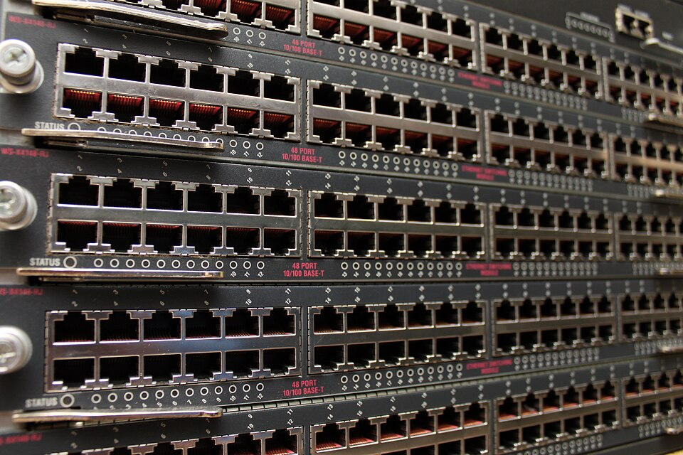

Commission a BACnet room-controller point
The room controller is visible but its temperature is wrong at the head end. Identify the device, the object and the property before changing anything.
For the first pass use the training transcript below. To inspect live traffic, use a lab controller you own, its manual, a laptop with Wireshark and an isolated Ethernet switch.
Start with the drawing and the points sheet
Find the sensor, its wired controller input and the host displaying the value. Copy down three IDs: the controller’s device instance, the point’s object type and instance, and the property you need. Device 300120 can expose Analog Input 7 with Present Value 22.1, Degrees Celsius, and Status Flags clear.

Examples of HVAC control hardware. Compare the wired controller terminals with the actuators that physically move valves or dampers. Photo by Mstucky2, hardware courtesy of KMC Controls. Original · CC BY-SA 3.0.


Photo by Ben Franske, resized. Original photo · CC BY-SA 4.0.

| Point tag | Device/object | Property and expected value |
|---|---|---|
| Room temp | 300120 / Analog Input 7 | Present_Value 22.1 °C, Status_Flags clear |
| Supply command | 300120 / Binary Output 2 | Present_Value Inactive on an idle trainer |
| Fan proof | 300120 / Binary Input 9 | Present_Value Inactive on an idle trainer |
Use the traffic and the value as separate checks
On a lab network, start a capture on the test client interface. Filter with bvlc || bacnet || bacapp. Use the client’s documented discovery command and look for a Who-Is, followed by a matching I-Am. The client can then issue a ReadProperty for a known object. Discovery proves an answer was heard. The returned object and property prove which value you read.
Training transcript (decoded summary)
09:14:00 client → broadcast Who-Is
09:14:00 .31 → network I-Am device 300120
09:14:01 .31 → client Analog Input 7 / Present Value = 22.1
09:14:01 .31 → client Analog Input 7 / Units = degrees Celsius
09:14:08 .42 → network I-Am device 300120For the exercise, record the Device instance and both sender IPs. Two distinct devices claiming the same instance is a configuration problem. Put the suspect controller on the isolated bench and compare labels and programming. Broadcast discovery across routed BACnet/IP segments may require the designed BACnet mechanism such as a BBMD. Work with the network diagram and site owner for a real system.
Watch on YouTube · Listen for what a common BACnet interface exposes across different vendors. Then work through the packet and object identifiers below. BACnet 101: An Introduction to the BACnet Standard (Preview) · BACnetInternational.
Watch on YouTube · Pause at discovery on the bench and identify which value proves that the returned device is the one you intend to test. BACnet bench testing · Horner Automation.
Compare point value, command and physical proof
When an output shows ON, trace command, priority and actual feedback. On a commandable output, a lower numbered active slot in the Priority Array takes precedence. An operator value occupying slot 8 can hide a schedule at slot 16. Inspect and record the array when available. Relinquishing a command on a trainer leaves other slots in effect. If none is active the Relinquish_Default applies.
For an input that reads correctly at the device but incorrectly at the front end, record the front end’s point mapping, units, timestamp and trend sample before deciding whether the issue is in the controller. For an output, prove the actuator or fan moved using independent feedback.
Write the handover
Save one point list with device ID, object ID, property, reference value, observed result and resolution. Include one case where you stopped at the wiring, device, mapping or network boundary and state the evidence. Leave your trainer’s configured output in its normal state.
Read the course outlines and exercises in the BACnet Institute’s device and building-automation training. BACnet Institute courses · Wireshark BACnet application filter reference.
T17 · How networks really work: Ethernet, IP, TCP/UDP
T34 · Control signals, PLC scans and independent proof